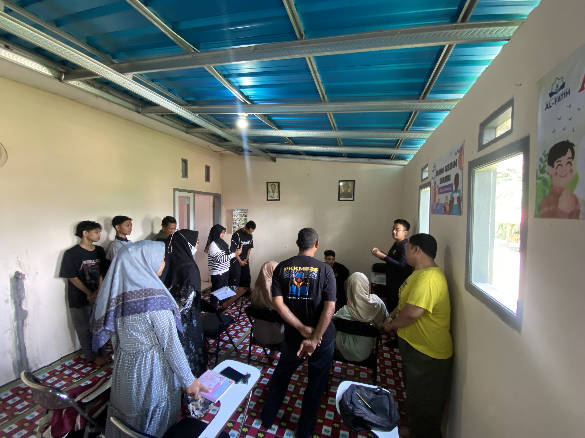
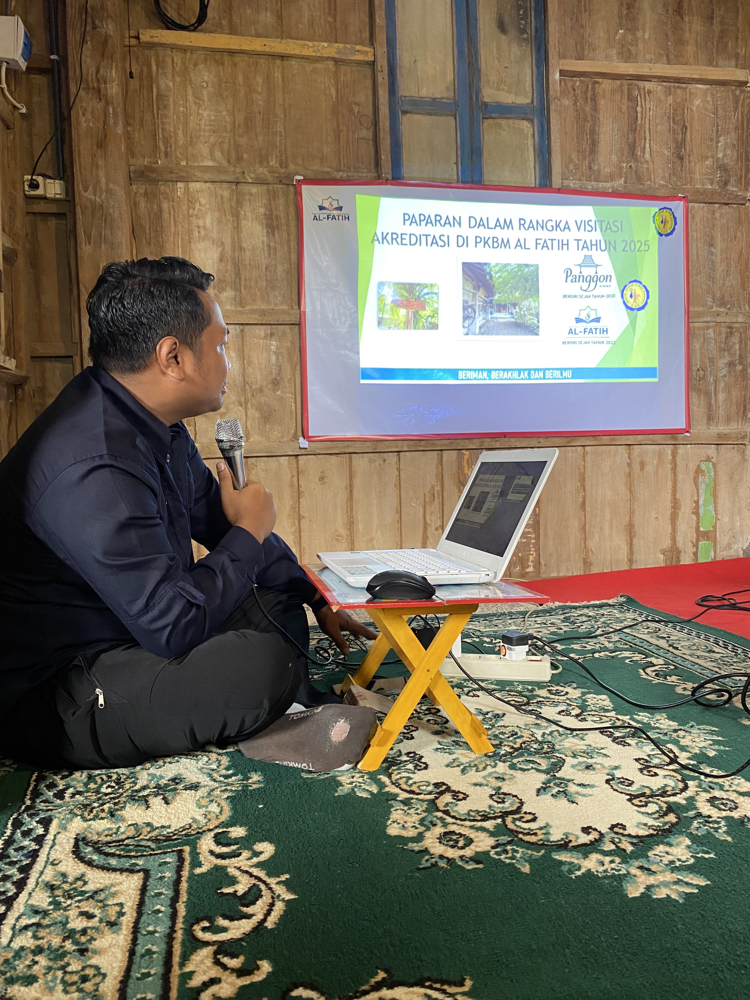
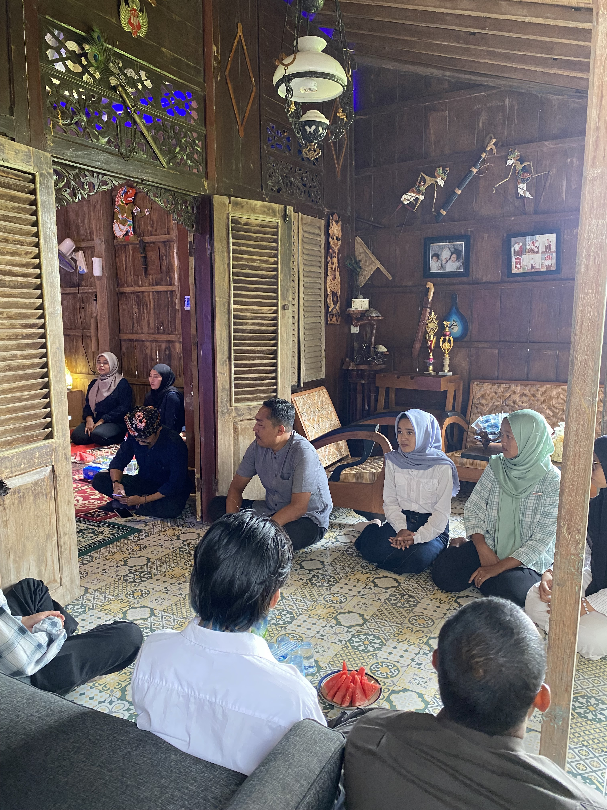
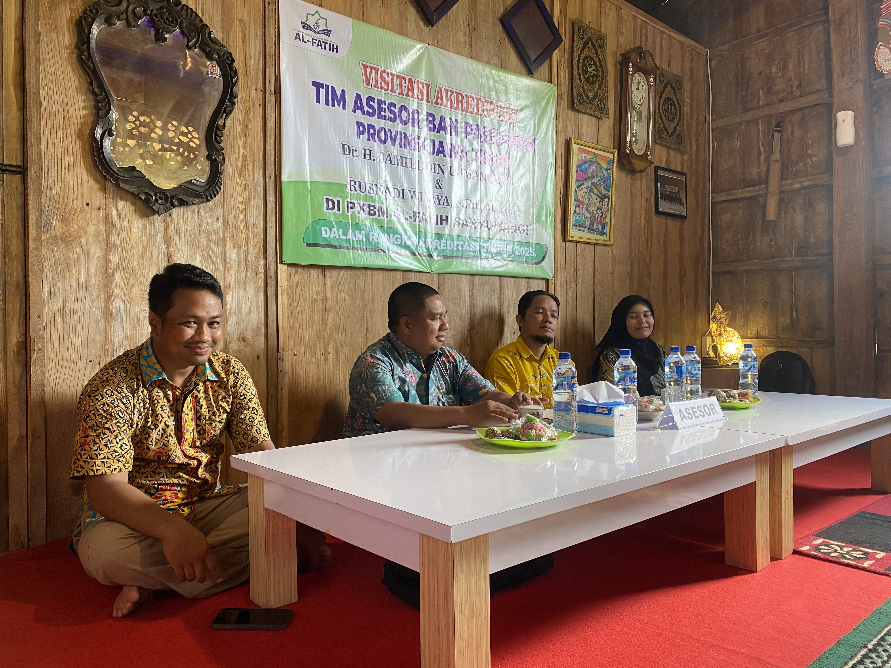

Mengenal Kami
PKBM AL-FATIH Banyuwangi
Pusat Kegiatan Belajar Masyarakat (PKBM) AL-FATIH adalah lembaga pendidikan non-formal yang berdiri dan beroperasi secara resmi di Kebalenan, Kecamatan Banyuwangi, Kabupaten Banyuwangi, Jawa Timur.
Didirikan dengan semangat untuk membuka akses pendidikan yang seluas-luasnya, PKBM AL-FATIH hadir sebagai jembatan bagi masyarakat yang ingin menyelesaikan pendidikan formalnya tanpa harus meninggalkan pekerjaan atau berpindah domisili.
Kami menyelenggarakan program Pendidikan Kesetaraan Paket A (setara SD), Paket B (setara SMP), dan Paket C (setara SMA) dengan kurikulum resmi Merdeka Belajar dari Kemendikdasmen RI.
500+
Alumni Lulus
8+
Tahun Pengalaman



NPSN
P9999185
Nomor Pokok Sekolah Nasional, terdaftar di data.kemdikbud.go.id
SIOP
421/8309/429.101/2024
Surat Izin Operasional dari Dinas Pendidikan
Akta Kemenkumham
AHU-00000.77.AH.01.04.2023
Badan hukum sah terdaftar di Kemenkumham RI
Arah dan Tujuan
Visi dan Misi
Visi
Menjadi lembaga pendidikan non-formal terdepan yang mendidik cerdas dan menciptakan perubahan positif bagi masyarakat Banyuwangi dan Indonesia.
Misi
-
1
Menyelenggarakan program pendidikan kesetaraan yang berkualitas, berstandar nasional, dan mudah diakses oleh seluruh lapisan masyarakat.
-
2
Menyediakan sistem pembelajaran hybrid yang fleksibel agar warga belajar dapat belajar tanpa meninggalkan pekerjaan dan kewajiban sehari-hari.
-
3
Membangun lingkungan belajar yang kondusif, inklusif, dan mendukung perkembangan karakter warga belajar.
-
4
Memastikan setiap lulusan memiliki ijazah yang diakui negara dan dapat digunakan untuk melanjutkan pendidikan, melamar pekerjaan, serta pengembangan karir.
-
5
Berkolaborasi dengan pemerintah, dunia usaha, dan komunitas lokal untuk memperluas dampak positif pendidikan bagi masyarakat.

Identitas Visual
Filosofi Logo
Nama AL-FATIH
Al-Fatih berasal dari bahasa Arab yang berarti "Pembuka" atau "Pemenang". Nama ini mencerminkan semangat lembaga dalam membuka pintu pendidikan bagi siapa saja, tanpa terkecuali.
Warna Biru
Warna biru melambangkan kepercayaan, profesionalisme, dan ketenangan. Dalam konteks pendidikan, biru juga merepresentasikan keterbukaan wawasan dan luasnya ilmu pengetahuan seperti langit dan laut.
Tagline: Mendidik Cerdas, Menciptakan Perubahan
Tagline ini mencerminkan dua pilar utama lembaga: mendidik dengan kualitas yang cerdas dan terukur, serta menciptakan perubahan nyata dalam kehidupan warga belajar dan masyarakat sekitarnya.
Kurikulum Merdeka
Penggunaan logo Kurikulum Merdeka, Merdeka Belajar, dan Merdeka Mengajar menunjukkan bahwa PKBM AL-FATIH beroperasi sesuai kebijakan resmi Kemendikdasmen RI dan berkomitmen pada standar pendidikan nasional.